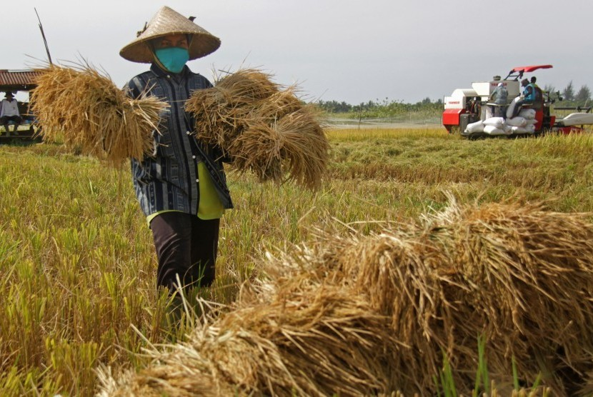

Hasil Panen Jember Capai 43.124 Hektare
Sumber = https://www.republika.co.id/berita/ekonomi/pertanian/ppj6ky423/hasil-panen-jember-capai-43124-hektare
JEMBER - Dinas Tanaman Pangan, Hortikultura, dan Perkebunan Kabupaten Jember mencatat luas lahan pertanian yang sudah panen pada Maret dan April 2019. Diprediksi panen mencapai 43.124 hektare dengan produksi rata-rata sebesar 6,8 ton per hektare.
"Hampir semua lahan pertanian di wilayah Jember sudah memasuki panen pada Maret 2019 dan masih ada sejumlah wilayah yang panen saat ini, namun tidak sebanyak panen raya pada bulan lalu," kata Pejabat Dinas Tanaman Pangan, Hortikultuta, dam Perkebunan Jember Rudi Indrawan di Jember, Jawa Timur, Sabtu (6/4).
Berdasarkan data, lanjut dia, lahan pertanian yang sudah panen pada Maret 2019 seluas 39.971 hektare dan panen pada April 2019 diprediksi seluas 3.153 hektare dengan rata-rata kadar air 25 persen dan kotoran hampa lebih dari 10 persen. Panen tersebar hampir merata pada 31 kecamatan di Kabupaten Jember.
Menurutnya lahan pertanian di beberapa kecamatan seperti Kecamatan Bangsalsari, Kencong, dan Gumukmas, juga akan panen pada akhir April 2019, namun luasannya tidak terlalu banyak dan kecil-kecil. "Pantauan di lapangan harga gabah yang kualitasnya bagus rata-rata Rp 3.500 per kilogram untuk Gabah Kering Panen (GKP) dan memang masih di bawah Harga Pembelian Pemerintah (HPP) sebesar Rp 3.700 per kilogram," tuturnya.
Ia berharap harga gabah petani bisa meningkat dan minimal sesuai HPP sebesar Rp 3.700 per kilogram. Badan Urusan Logistik (Bulog) Jember berjanji akan membeli harga gabah petani minimal sesuai HPP dan bisa di atas HPP, apabila kualitas gabah petani cukup bagus.
Sementara perwakilan Forum Komunikasi Petani Jember Hendro mengatakan harga jual gabah petani masih di bawah HPP yakni berkisar Rp 2.500 hingga Rp 3.000 per kilogram dan rendahnya harga gabah tahun ini merupakan harga terendah selama bertahun-tahun. "Kami berharap pemerintah hadir untuk menyelamatkan petani dengan membeli gabah petani minimal sesuai dengan HPP, meskipun HPP tersebut sebenarnya tidak relevan lagi diterapkan tahun ini," katanya.
Forum Komunikasi Petani Jember, lanjut dia, akan mengawal kesepakatan yang dibuat oleh pihak Bulog dan Persatuan Pengusaha Penggilingan Padi dan Beras (Perpadi) yang akan membeli gabah petani minimal sesuai dengan HPP. Sebab hingga kini masih ada harga gabah petani yang dibeli di bawah HPP.
Sementara itu, Komandan Kodim 0824/Jember Letkol Inf Arif Munawar menginstruksikan anggotanya untuk memantau harga gabah di lapangan baik di lahan pertanian maupun di penggilingan padi secara intensif, sehingga harga gabah petani minimal dibeli sesuai dengan HPP. "Saya berharap jangan sampai ada pihak-pihak yang mencoba bermain-main dengan harga gabah tersebut karena kasihan petani yang sudah bekerja keras mengolah lahannya, menanam padi hingga panen," katanya.